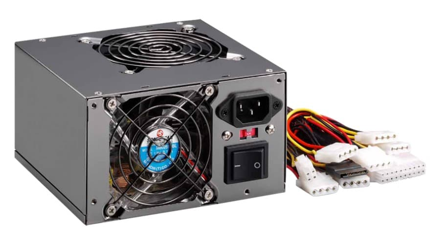
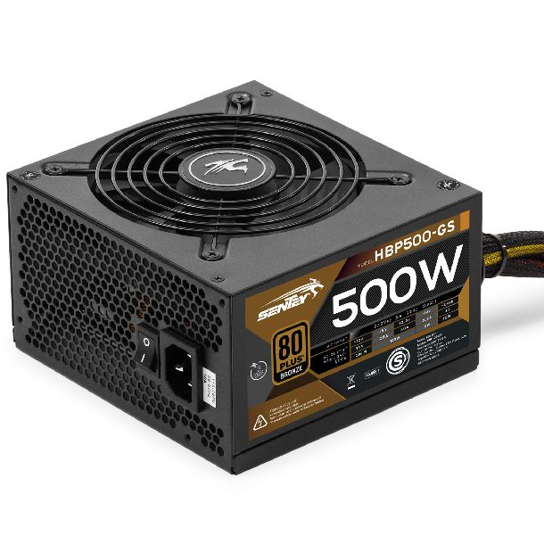

¿Que es una Fuente de poder?
Es un dispositivo cuadrado, el cual suministra corriente a todos los componentes de la pc. La fuente convierte los Voltajes(corriente alterna) del tomacorriente a Watts(corriente continúa), para la pc.
Su calidad es muy importante, ya que esta es la que pasa la corriente. Para saber que tan segura es la que estamos comprando, nos basamos en su proteccion.
Tenemos el certificado 80 Plus, las cuales van asi:
Generica: tienen cero proteccion y componentes de bajisima calidad, estas pueden durar apenas o mucho tiempo, dependiendo de la suerte y la marca.
80 Plus White: Su proteccion es buena, pero tiene deficiencia energetica, o sea, segun al porcentaje de trabajo, es la energia que entrega.
80 Plus Bronze: Es lo mismo que la anterior, pero con menos deficiencia.
80 Plus Plata: Igual que lo anterior.
80 Plus Gold: Muy buena calidad, y con poca deficiencia.
80 Plus Platinum: Lo mismo.
80 Plus Titanum: Excelente calidad y apenas hay deficiencia.
Ejemplo de como se ven
 Un video de como se coloca una fuente: